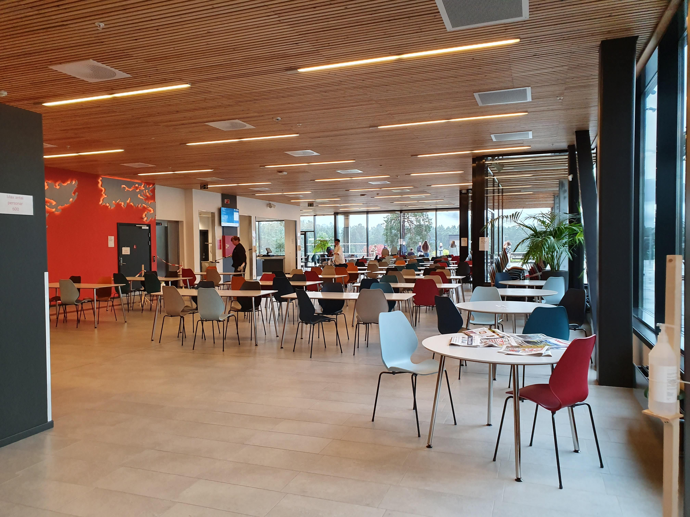
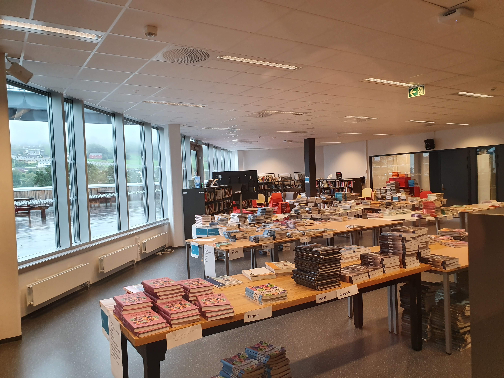
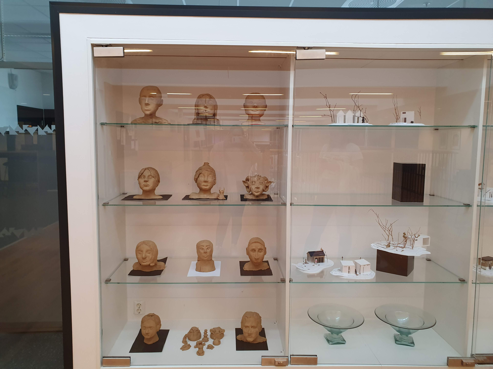
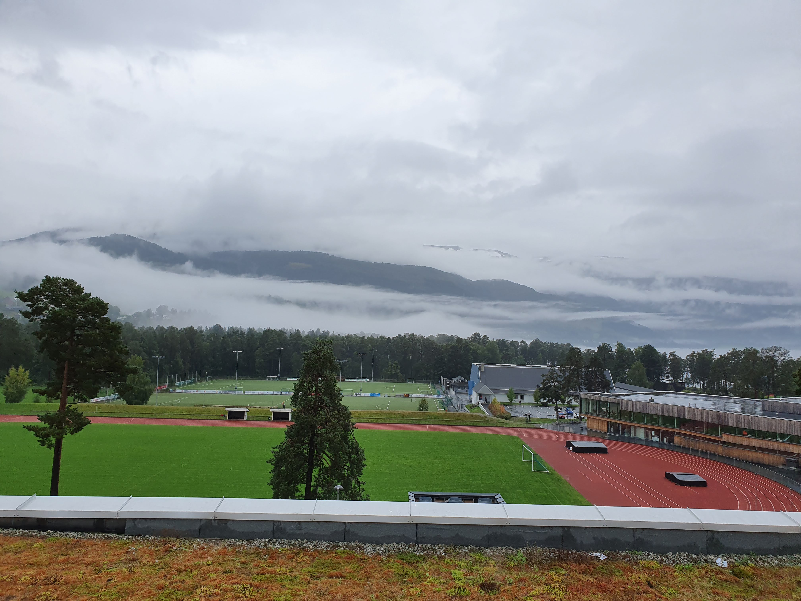

Voss Gymnas er en videregående skole som ligger i sentrum på Voss. Skolen tilbyr syv forskjellige utdanningsprogram, både studieforberedende og yrkesrettet. På skolen er det rundt 600 elever som studerer og rundt 120 ansatte som jobber.
 Voss gymnas har egen kantine og bibliotek. I kantina kan elevene kjøpe varm mat laget av kantinens ansatte, eller blant annet påsmurte baguetter og youghurt. På biblioteket kan elevene få låne seg både faglige bøker og skjønnlitterære, fra skolens egne bibliotekar.
 Voss Gymnas tilbyr mange spennende linjer, som for eksempel idrettsfag med toppidrett i ski, informasjonsteknologi og medieproduksjon, kunst, design og arkitektur, og musikk, dans og drama.